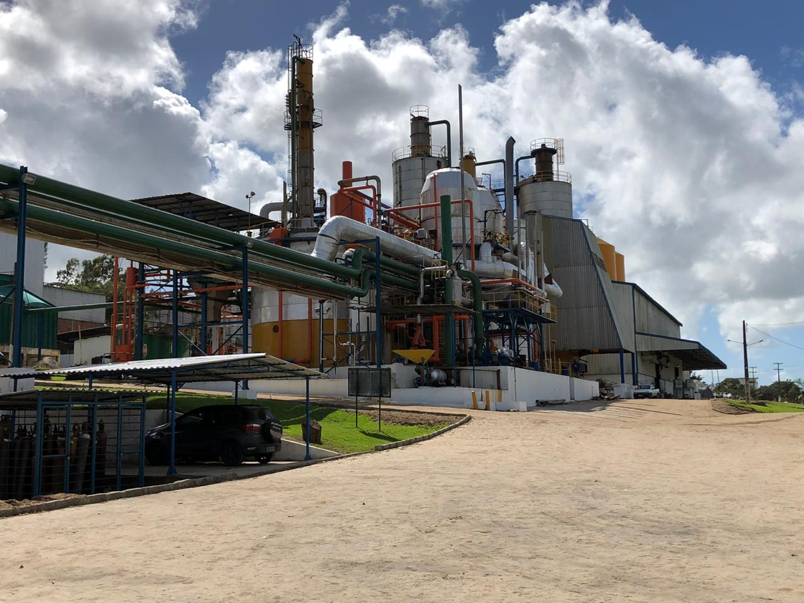

Cooperativa Pindorama

Nossa história
A cooperativa nasceu da união de pequenos produtores
da região, que
decidiram trabalhar juntos para fortaleçer a produção local.
O que produzimos
- Ovos e aves
- Leite e derivados
- Mel
- Frutas e verduras
Sozinhos vamos rápido, juntos vamos mais longe
Como chegar
- Siga pela BR até coruripe
- Entre na Estrada da Colônia Pindorama
- A sede fica ao lado da escola
Página produzida na aula de programação web-Semana 1.